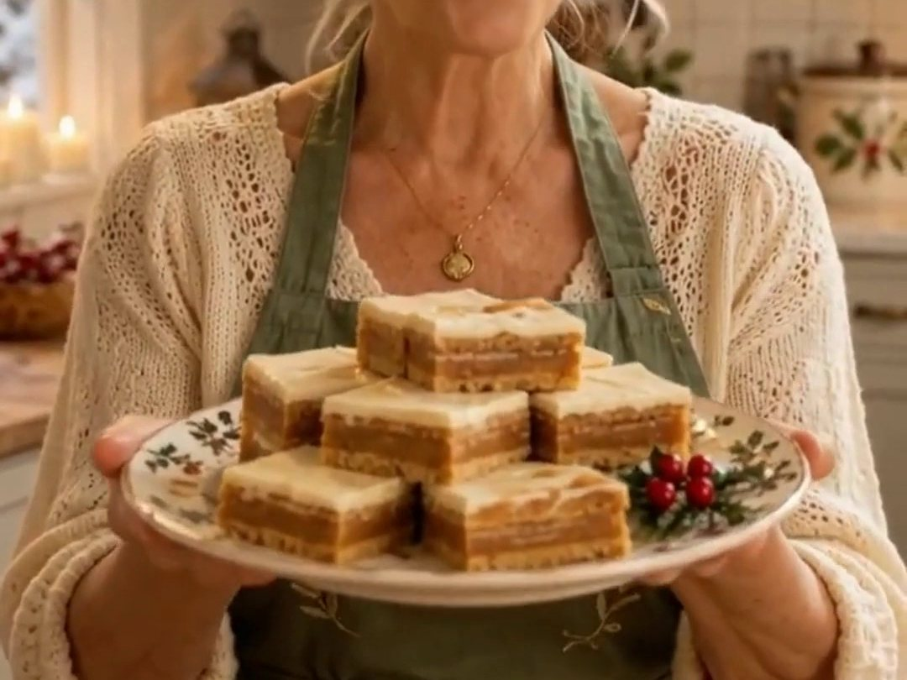

No-bake · old-fashioned · Christmas squares
OMG Butterscotch Delights!
An old-fashioned, no-bake family favourite. These delicious squares are made with layers of graham crackers, a rich, buttery butterscotch filling, and a smooth vanilla butter icing. A wonderful treat for Christmas gatherings, holiday dessert trays, or simply enjoying with a cup of tea!

Ingredients
Graham cracker layers & butterscotch filling
- Whole graham crackers, enough for two layers
- ¾ cup butter, margarine, or vegan margarine
- ⅔ cup packed brown sugar
- ½ cup milk
- 1 teaspoon vanilla extract
- 1¼ cups graham cracker crumbs
Vanilla butter icing
- 1½ cups icing sugar (powdered sugar)
- 3 tablespoons butter, softened
- 1½ teaspoons water
- ½ teaspoon vanilla extract
Instructions
- Prepare the base: line the bottom of an ungreased 9 × 9-inch square pan with whole graham crackers, trimming them as necessary to fit snugly.
- Make the butterscotch filling: in a large saucepan, combine the butter, brown sugar, milk and vanilla. Bring the mixture to a boil, then reduce the heat and simmer gently for 5 minutes. Remove the saucepan from the heat and stir in the 1¼ cups of graham cracker crumbs until well combined.
- Assemble the layers: pour the warm butterscotch filling evenly over the graham crackers in the pan. Cover the filling with a second layer of whole graham crackers, trimming them to fit. Allow the layers to cool completely before adding the icing.
- Prepare the vanilla butter icing: in a mixing bowl, combine the icing sugar, softened butter, water and vanilla. Beat together until smooth and creamy.
- Ice the squares: spread the butter icing evenly over the cooled graham cracker layer. Allow the icing to set before cutting into 36 squares.
🌿 A Little Note from the Sage
There's something wonderful about those old-fashioned recipes that don't require fancy ingredients or hours in the kitchen. These Butterscotch Delights are sweet, buttery, and absolutely irresistible. Just try stopping at one!
🛍️ Shop Grandma's Kitchen
Love making old-fashioned Christmas treats? Here are some of Grandma's favourite kitchen essentials for making OMG Butterscotch Delights!